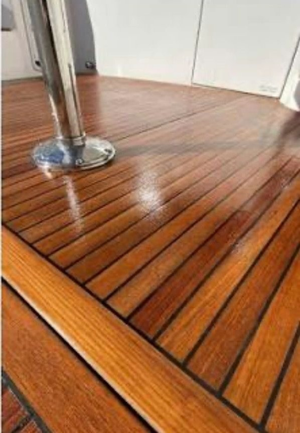
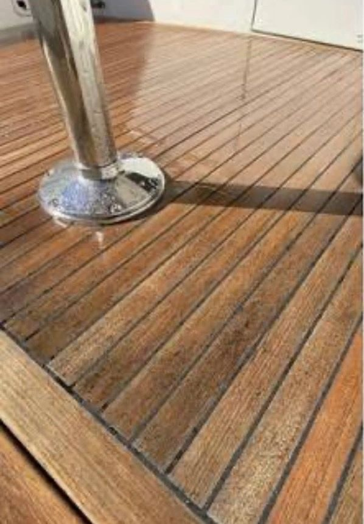

Matt was a pleasure to work with and did a great job detailing my 24' Grady White. Matt made himself super available to see the boat, get me a quote and get the job done
Teak Restoration · Branford, CT
Boat teak restoration in Branford, CT.
Cleaning, brightening, and sealing teak that has gone gray, without scrubbing the life out of the grain.
Owner operatedFully insuredServing Branford and nearby
Request a free quote
How we do it
Boat teak restoration, done properly.
Cleaning, brightening, and sealing teak that has gone gray, without scrubbing the life out of the grain.
Quoted after we look at her, because the honest number depends on condition.
What the job includes
- Cleaned and brightened rather than aggressively sanded
- Grain protected, because teak does not grow back
- Sealed or left natural, your call
- Honest word when a piece belongs with a finish carpenter


Who you are calling
You get Matt, not a call center.
MBD Marine Care is owner operated. Matt quotes the boat, Matt turns up, and Matt does the work. When you call about a boat in Branford, you are talking to the person who will be standing on the dock next to her.
He grew up in Milford, a street from the beach and around the corner from the Housatonic, and has detailed professionally for over half a decade. Most of the work comes from repeat owners, referrals, marinas, and brokers.
I always admired the beauty these vessels can capture. Now I am the one making them glow.
Service area
All of Branford, not just the easy berths.
Branford is about twenty-five minutes east of Milford. We are mobile, so we bring water, power, and everything else to the boat rather than asking you to move her.
Where is she kept?
Every marina, club and yard we already service in Branford. Tap one and it goes into the form, so nobody has to type it out on a phone.
Town boundaries from Connecticut open data. Surrounding towns shown for orientation.
Why Branford is like this
Local conditions, not a sales pitch.
the Branford River, Stony Creek, and the Thimble Islands
More than a hundred pink granite islets a short run offshore, and boats that get used because of it.
The Thimbles change how people use their boats here. A boat that runs out to the islands several times a week accumulates salt spray and UV exposure far faster than one that leaves the slip on Saturdays. Branford boats are, on average, the most heavily used boats we detail, and the finishes show it.
Teak Restoration in Branford: Sun and salt spray are what turn teak gray, and a boat that runs offshore gets a full dose of both. Regular sealing is much cheaper than restoration.
Quoted after we see her
Exposure in Branford means salt spray and UV at a rate most owners underestimate, and we quote with that in mind.
Reviews
What boat owners say.
5 Stars on Google
Matt and team compounded and waxed my boat today....very pleased with the outcome. They were very meticulous , and ensured the entire site and boat stayed clean. Recommend them to anyone looking to have their vessel detailed.
Matt and his team did a great job bringing the shine back on my 2001 boat. Matt's communication was fantastic and his pricing was very reasonable. I highly recommend using Matt's services.
Matt of Matt's Boat Detailing (MBD) is the real deal. He cleaned up a mess that a different detailer made. With Phase I complete, my boat looks great! I am so happy I finally got to use his services. He is a hands on owner operator which I think is very important. He took the time to visit and advise as well as inspect the final work making adjustments as necessary. He knows what he is doing and he and his crew even properly prepped to protect neighboring surfaces, which most boat detailers are too lazy to do. I am looking forward to him completing Phase II and using his services moving forward! I will be recommending him to everyone I know that is looking for boat detailing services.
This is the third year that Matt and his crew have detailed my 33' Cruisers. I have been thoroughly pleased every year and would highly recommend!
Fantastic job!
Matt & his team did a great job on my 2009 44 Sea Ray SB! Top side compound polish & wax, hull detail, and a fresh coat of bottom paint... she's looking like she just came off the showroom floor! Can't recommend him enough. Great communication, reliable, and professional.
Company was very professional. They did exactly what they said they were gonna do price very reasonably very happy with his services will continue to use him in the future.
Matt's boat detailing has been detailing our boat for 5 years, Matt and his crew do excellent work. I would recommend..
Matt and his team did a great job removing the oxidation from my 2016 Robalo R222 center console. Waxed and buffed the hull looks like new. I highly recommend Matt's Boat Detailing.
Matt did my boat hull March 25 and it looks great
Great job getting my boat ready for the season. Matt communicated the whole way. Will certainly be back for more
Matt did a great job wet sanding, compounding, washing and waxing my Steiger 23' Miami pilot house and top side. He a true professional, works with a smile and does great work, I can shave in the reflection. Thanks! Woody
Matt and his team did an excellent job bringing Schatzi back to life. He was very professional and respectful. The topsides look like a mirror. I would highly recommend him!
Matt and his team did a phenomenal job bringing our 2004 Tiara gel coat back to life! This included a wet sand and finished with a ceramic coat. The boat shines and is now protected like never before!
You get what you pay for! Matt's services fully lived up to my lofty expectations and my boat looks better than when leaving the showroom. Matt will be my go to guy for any detail related jobs I may require in the future.
My Experience with Matt's details was truly top notch! First off I called him very late in the spring and he came up with a way to get my Hull done to follow up with the super structure once in the water. This year I opted to go with not only a compound and seal but also went down the ceramic coating route in hopes of getting an extra year out of the job. First off his pricing is very competitive compared to few others I checked. Matts work was amazing and the boat looks brand new! Lastly, his communication was spot on. As with any spring/early summer project in New England, we had plenty of weather related issues. He kept me posted every step of the way, touched base with any reschedules, let me know when he got there, and lastly when he left. I could not be more pleased with my decision to use Matts Detailing and will be a return customer for sure next year to “touch up”. I highly recommend reaching out to Matt for any detailing work!
Matt's boat detailing service was great as advertised. Very insightful, detail oriented and clearly has a passion for his work. Highly recommend his services for your boat to look its best and also the fact he comes to you makes it even better
Professional, wonderful work. Highly recommend!
Great job very professional
Boat in Branford? Let us take a look.
Tell us the length and where she is kept, and we will come back with a number.